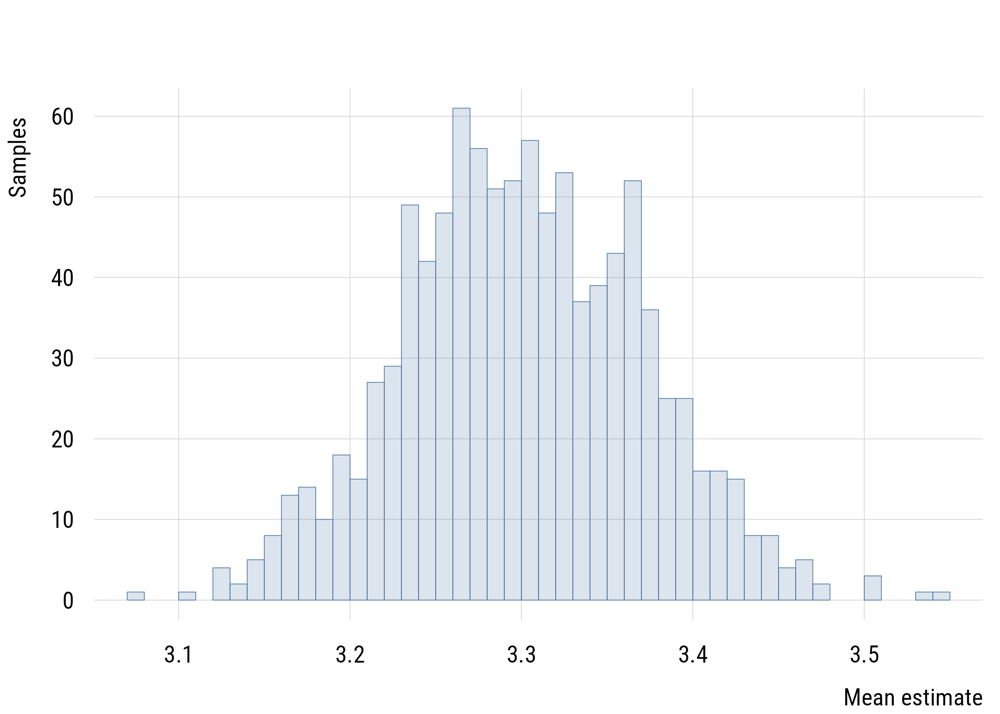
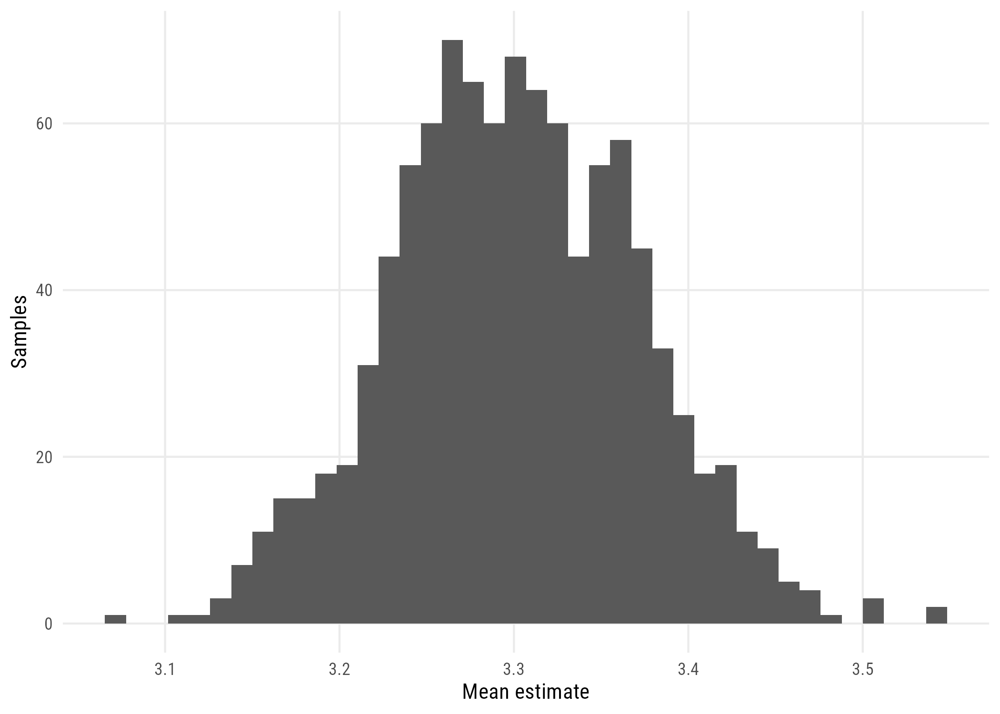
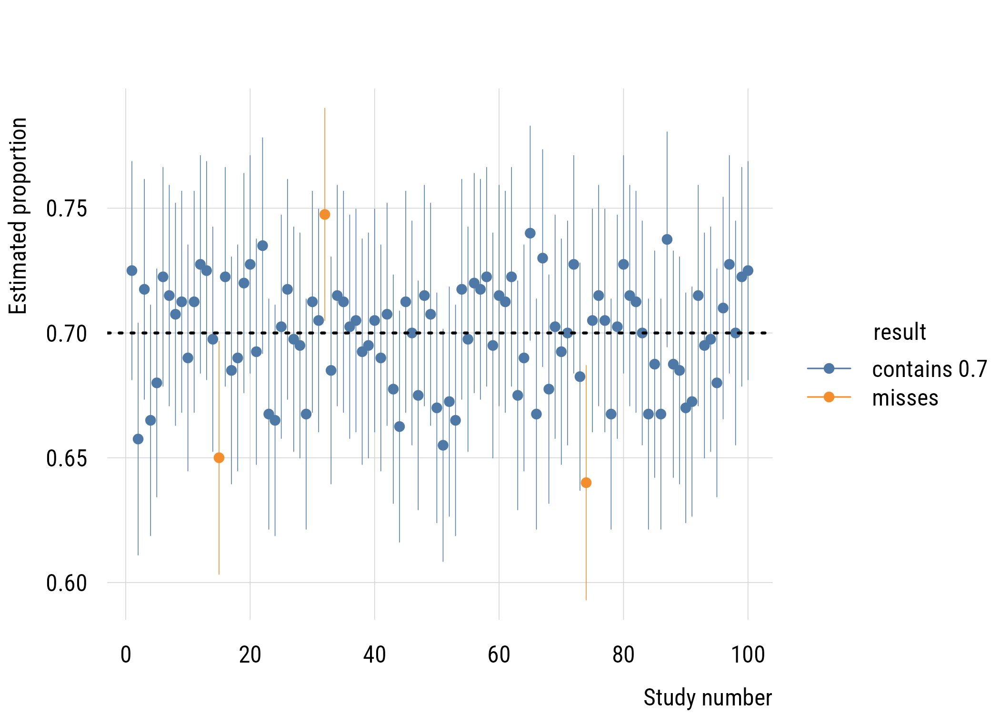
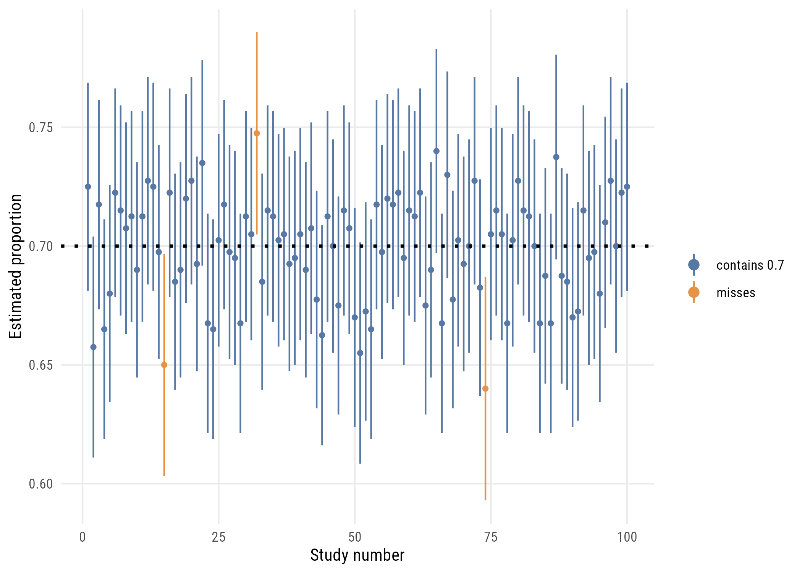

gss <- readRDS(here::here("data", "gss2024.rds")) |>
haven::zap_labels()5 Sampling distributions and intervals
We will use simulations to understand sampling distributions. Chapter 2 built the object without naming it; Chapter 4 ended by needing it. Now we name it, work out how wide it is without simulating, and turn that width into a statement about what we do and don’t know.
5.1 The sampling distribution
The sampling distribution is the distribution that we would get if we did simulations like these infinite times. (Again, not infinite sample size but infinite simulations of a given sample size!) Thanks to the CLT, we know exactly how these would look.
That example was from a Bernoulli distribution but this works for any distribution. Mean estimates from repeated samples would form a normal distribution with a known mean and standard deviation.
We need some skewed data to show that we get a normal sampling distribution for the mean (with a big enough sample) no matter what the shape of the underlying distribution. We’ll use the GSS classic, tvhours.
tv <- gss$tvhours[!is.na(gss$tvhours)]
c(n = length(tv), mean = mean(tv), sd = sd(tv)) n mean sd
2152.000000 3.302509 3.298709 Consider this sample a population for now and take repeated samples (with replacement) from it. First step is to write a function that grabs a sample and computes the mean.
d <- gss |>
filter(!is.na(tvhours))
get_sample_mean <- function(n) {
d |>
slice_sample(n = n, replace = TRUE) |> # don't forget replacement!
summarize(m = mean(tvhours)) |>
as.numeric()
}Now make a simulation “skeleton” to plug the results into. For starters this is just a tibble with 1000 rows and an index number.
set.seed(522)
sims <- tibble(
sim_number = 1:1000
)
sims <- sims |>
rowwise() |> # do separately by row
mutate(m = get_sample_mean(n = length(tv))) # you can vary the Nplt(~ m, data = sims, type = "hist", breaks = 40,
xlab = "Mean estimate", ylab = "Samples")
ggplot(sims, aes(x = m)) +
geom_histogram(bins = 40) +
labs(x = "Mean estimate", y = "Samples")
You can see that the distribution of sample means looks pretty normally distributed (symmetrical, bell shaped) even though the underlying data are very skewed.
5.2 The standard error
The expected mean of the sampling distribution is just \(\bar{x}\), the sample mean. This is the best guess we can make.
The standard deviation of the sampling distribution has a special name: the standard error. The formula is
\[\text{SE} = \frac{\text{SD}}{\sqrt{n}}\]
We can read it straight off the simulation, or use the formula:
c(from_simulation = sd(sims$m),
from_formula = sd(tv) / sqrt(length(tv)))from_simulation from_formula
0.07048565 0.07110872
Note
This is one of the many cases where there is an analytic solution to a problem we could address through simulation. How well do the empirical values match?
For a proportion the logic is identical, since a Bernoulli variable has \(\text{SD} = \sqrt{p(1-p)}\):
\[\text{SE}_{\hat{p}} = \sqrt{\frac{\hat{p}(1-\hat{p})}{n}}\]
support <- as.numeric(gss$abany[!is.na(gss$abany)] == 1)
p_hat <- mean(support)
n_ab <- length(support)
se_p <- sqrt(p_hat * (1 - p_hat) / n_ab)
c(p_hat = p_hat, n = n_ab, se = se_p) p_hat n se
5.985981e-01 2.140000e+03 1.059621e-02 The “hat” over \(\text{SD}\) and \(p\) is a way to say explicitly that it is an estimate from a sample. This is pronounced, for example, “p-hat.”
Notice too that the \(\sqrt{n}\) in the denominator is exactly why quadrupling the sample halved the spread back in Chapter 2.
NoteWhere normality enters
Chapter 4 promised that the normal assumption would eventually do real work. This is where. The standard error tells us how wide the sampling distribution is; the CLT tells us what shape it has. Only together do they let us turn a width into a probability.
5.3 Margin of error
When we report an estimate (for example an estimated vote proportion from a poll), we want also to report our uncertainty about that estimate because it comes from a sample.
Most people encounter this “in the wild” as the margin of error. This is conventionally calculated as plus or minus two standard errors.
moe <- 1.96 * se_p
moe[1] 0.020768575.4 Confidence intervals
Earlier we looked at the interquartile range of the simulation results from sampling. That was a way to quantify how much our results could vary given our sampling set up.
But the traditional way is to use a confidence interval based on the normal distribution. Since we know how to calculate the standard error based on descriptive statistics, we can calculate an interval within which some percentage of the estimates will fall given our sampling design and descriptive results.
c(lower = p_hat - moe,
upper = p_hat + moe) lower upper
0.5778296 0.6193667 Support for legal abortion for any reason is estimated at 59.9%, with a 95% confidence interval running from about 57.8% to 61.9%.
5.4.1 Width of the confidence interval
The width we choose for a confidence interval is a function of how “conservative” we want to be. For example, in a yes/no poll, we are 100% sure that \(p\) is between 0 and 1. But that’s not very useful.
The \(\pm\) 2 SE convention of the “margin of error” is based on the 95% confidence interval, which is the most conventional width now.
levels <- c(0.68, 0.89, 0.95, 0.99)
data.frame(
confidence = levels,
z = round(qnorm(1 - (1 - levels) / 2), 3),
lower = round(p_hat - qnorm(1 - (1 - levels) / 2) * se_p, 3),
upper = round(p_hat + qnorm(1 - (1 - levels) / 2) * se_p, 3)
) confidence z lower upper
1 0.68 0.994 0.588 0.609
2 0.89 1.598 0.582 0.616
3 0.95 1.960 0.578 0.619
4 0.99 2.576 0.571 0.6265.4.2 Aside: the z-score
The z-score is how we refer to how many standard deviations away from the mean a particular value is. This applies everywhere the normal distribution gets used.
It’s an abstract way to talk about “weirdness” without specifying units. If a person is 5 SDs from the mean on some dimension, they are very, very weird! This is true for height, wealth, extraversion, etc.
Tip
If the mean height for men in the US is about 70 inches and the SD is about 4 inches, how tall is someone 5 SDs above the mean? Below the mean?
5.5 Interpreting confidence intervals
What most people say is “we are 95% sure the true value is between the lower and upper bound of the confidence interval.” But that’s not quite accurate.
It’s more correct to say that, if we did the same study infinite times, 95% of the computed intervals would contain the true value.
The confidence level refers to our confidence in the procedure, not the specific interval, since that is calculated from just one dataset.
We can watch this happen. Return to the population from Chapter 2, where we know the truth is exactly 0.7:
set.seed(522)
population <- c(rep(1, 70000), rep(0, 30000))
make_interval <- function(n = 400) {
s <- sample(population, size = n)
ph <- mean(s)
se <- sqrt(ph * (1 - ph) / n)
tibble(
estimate = ph,
lower = ph - 1.96 * se,
upper = ph + 1.96 * se
)
}
intervals <- tibble(id = 1:100) |>
rowwise() |>
mutate(ci = list(make_interval())) |>
unnest_wider(ci) |>
ungroup() |>
mutate(covers = lower <= 0.7 & 0.7 <= upper)
sum(intervals$covers)[1] 97intervals$result <- ifelse(intervals$covers, "contains 0.7", "misses")
plt(estimate ~ id | result, ymin = lower, ymax = upper, data = intervals,
type = "pointrange",
xlab = "Study number", ylab = "Estimated proportion")
abline(h = 0.7, lty = 3, lwd = 2)
ggplot(intervals, aes(x = id, y = estimate, color = result)) +
geom_pointrange(aes(ymin = lower, ymax = upper), fatten = 1) +
geom_hline(yintercept = 0.7, linetype = "dotted", linewidth = 1) +
labs(x = "Study number", y = "Estimated proportion", color = "")Warning: The `fatten` argument of `geom_pointrange()` is deprecated as of ggplot2 4.0.0.
i Please use the `size` aesthetic instead.
97 of these 100 intervals contain the true value. The ones that miss aren’t mistakes; nothing was done wrong in those studies. With more repetitions the rate settles where it should:
set.seed(522)
coverage <- tibble(id = 1:2000) |>
rowwise() |>
mutate(ci = list(make_interval())) |>
unnest_wider(ci) |>
ungroup() |>
mutate(covers = lower <= 0.7 & 0.7 <= upper)
mean(coverage$covers)[1] 0.95255.6 Looking ahead
The confidence interval is closely linked to the idea of the hypothesis test. This uses the sample data to test if there is enough evidence to assert that the population differs from some specific reference value. That is Chapter 6.
The same logic applies to any estimate with a standard error, including the parameters of a fitted model. That needs one refinement, because when \(\sigma\) is itself estimated the normal distribution is slightly too optimistic and the \(t\) distribution takes over. That is Chapter 7.
5.7 Recap
- a sampling distribution is what we would get from infinite simulations of a given sample size, not infinite sample size
- the standard error is the SD of that distribution: \(\text{SD}/\sqrt{n}\) for a mean, \(\sqrt{\hat{p}(1-\hat{p})/n}\) for a proportion
- simulation and formula agree
- the margin of error is conventionally two standard errors, and a confidence interval is the estimate plus or minus that
- the confidence level refers to the procedure, not the specific interval